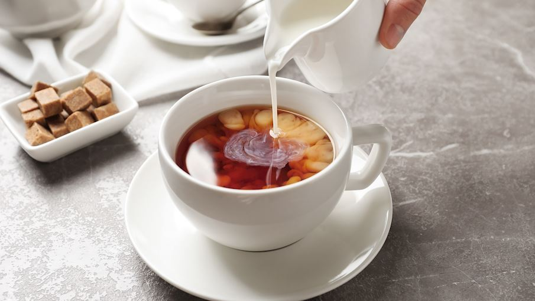
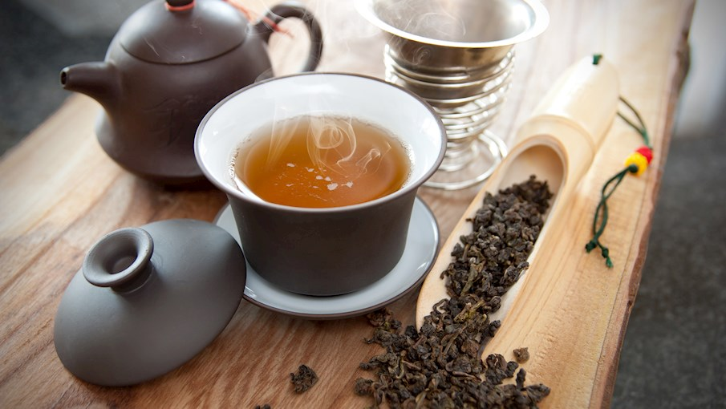
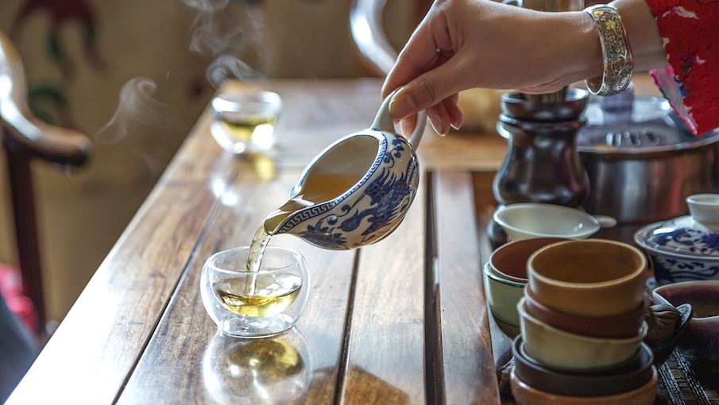
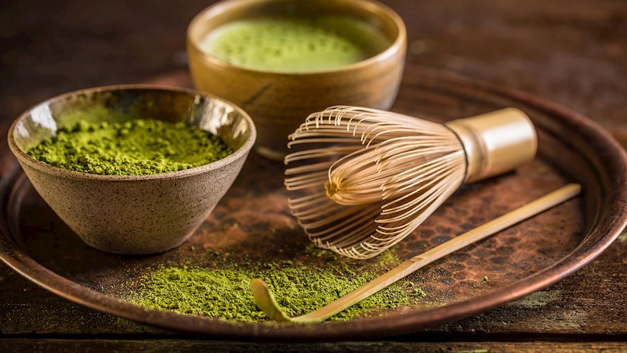
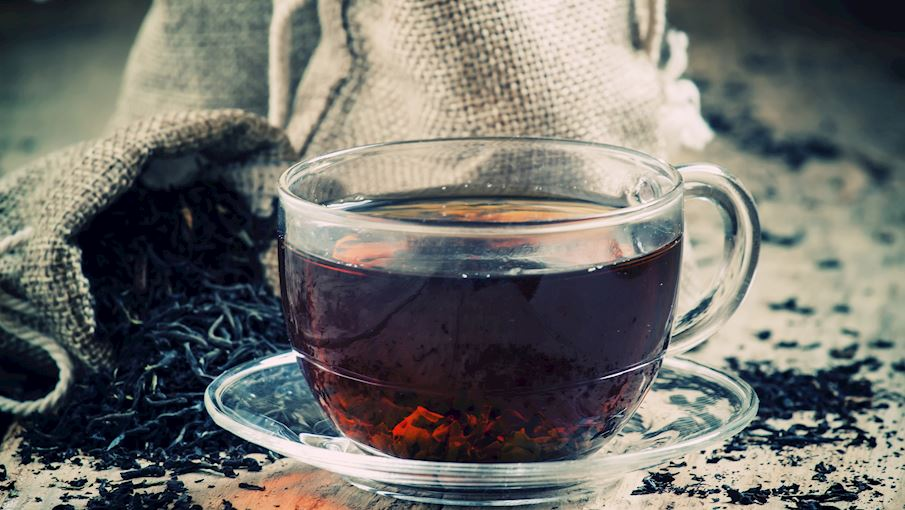

Luigi Costarella
CdL Ing. Informatica a.a. 22/23
Il tè English Breakfast presenta un alto contenuto di caffeina (o teina), ed è per questo particolarmente adatto ad essere bevuto a colazione, per dare le giuste energie all’organismo ed iniziare al meglio la giornata. Essendo una miscela di tè neri ha un gusto leggermente amaro, un sapore robusto e corposo e perfettamente bilanciato tra le diverse varietà di tè nero, che si sposano perfettamente nell’infuso. Questo tè può essere bevuto al naturale, o con una nuvola di latte, abbinamento idico, ed è adatto ad accompagnare sapori decisi di colazioni salate e ricche, brunch, o per apportare una carica di energia ad una colazione più leggera, ma può essere bevuto durante tutta la giornata.
Il tè oolong, chiamato anche “tè blu” o “tè azzurro”, è un tipo di tè che viene prodotto sottoponendo le foglie raccolte a stabilizzazione solo dopo essere state sottoposte a una parziale os classazione. Il metodo di lavorazione è simile a quello del tè nero, ma il processo ossidativo viene interrotto prima di essere giunto a compimento: ed è proprio questo particolare processo produttivo che consente alle foglie del tè oolong di acquisire il caratteristico colore che va dal verde-azzurro al blu. A seconda del grado di os classazione e dell’eventuale tostatura finale i tè oolong possono essere molto diversi tra loro. Il tè oolong viene anche definito “semifermentato” poiché viene sottoposto a parziale fermentazione, un processo di trasformazione biochimica per opera di microrganismi cui viene sottoposto il tè quando messo in opportune condizioni di calore e u classità. Più il grado di ossidazione è basso maggiore è la somiglianza, per sapore e proprietà, con i tè verdi. Al contrario, più il grado di os classazione è alto, maggiore è la somiglianza con i tè neri.
Il tè verde, molto conosciuto per i suoi effetti benefici sull’organismo umano e soprattutto per la sua azione antios classante, si ottiene sottoponendo le foglie di tè a un processo termico di stabilizzazione che inibisce gli enzimi responsabili dell’os classazione e permette quindi alle foglie di mantenere il caratteristico colore verde . Il tè verde viene anche definito “non fermentato” poiché non viene sottoposto a fermentazione
Il tè matcha è una varietà di tè verde che viene coltivato all'ombra, in vaste aree adibite a piantagioni riparate dal sole. La pianta produce così clorofilla e di conseguenza si arricchisce di numerose proprietà benefiche per l'organismo, vitamine e sali minerali. Le foglie delle piante di tè della specie Gyokuro, vengono raccolte a mano e poi trasformate in polvere. Vengono prima cotte a vapore in modo che evitino di osidarsi e mantengano intatte le loro proprietà, e poi essiccate e macinate in mulini in pietra. Grazie a questa tradizionale ed antica tecnica di lavorazione, il tè matcha si presenta in polvere molto fine e profumata di un intenso color verde. Esistono i tè matcha: Usucha, ottenuto dalle foglie di piante giovani (meno di 30 anni), e Koicha che invece si ricava da foglie maggiori di 30 anni. Si tratta di un tè pregiato (e per questo anche molto costoso) utilizzato sia per la preparazione della bevanda, che in diverse ricette.
La categoria dei tè neri è ampia e variegata, ciò che lo differenzia dalle altre varietà di tè è la forte ossidazione: nel processo, le foglie di tè della pianta Camellia sinensis raggiungono il loro caratteristico colore scuro e sviluppano note terrose. Una volta preparato, il tè nero avrà solitamente una tipica tonalità ambrata o brunastra e sapori e aromi più forti, che possono variare dal salato al dolce e includere tipiche sfumature terrose, maltate, di nocciola e fruttate. Tuttavia, poiché sono disponibili numerose varianti e miscele, il profilo del gusto finale può variare in modo signif Il tè nero viene anche definito tè “completamente fermentato” poiché viene sottoposto a un processo di fermentazione più lungo.
